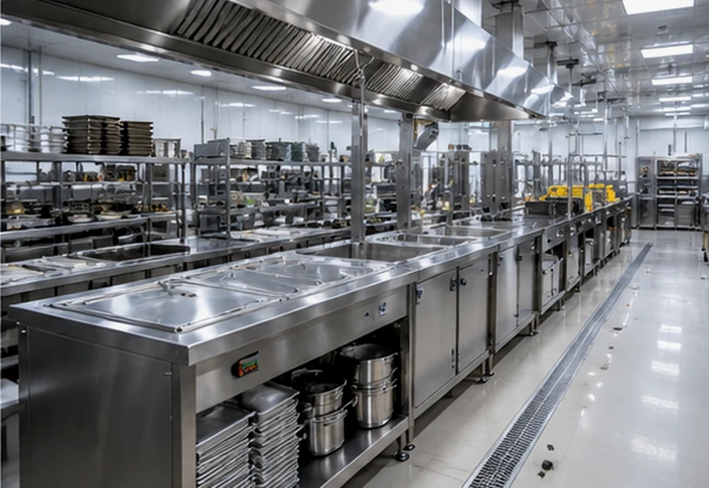
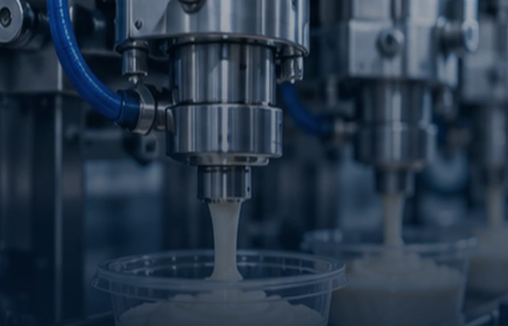
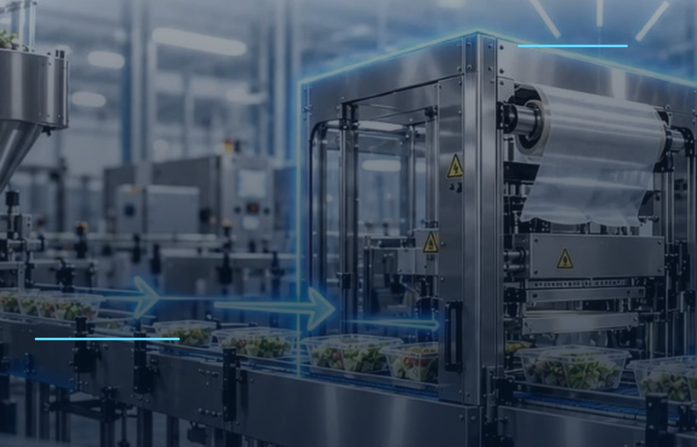
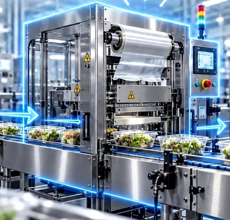

01 / ЗАВОДЫ
Производство изнутри
Технологические площадки и оборудование в рабочем контексте.
Деловые поездки в Китай: производственные площадки, отраслевые выставки и предприниматели, которые смотрят в будущее.
Деловая экспедиция помогает лично увидеть отрасль и задать вопросы там, где создаются технологии.
Технологические площадки и оборудование в рабочем контексте.
Новые продукты, направления и общение с представителями рынка.
Обмен опытом и профессиональные знакомства.

Маршрут формируется под задачи группы. Важно не просто посмотреть машины, а оценить идеи и познакомиться с теми, кто реально работает с технологиями.
Даты, программа, заводы и условия участия согласуются для каждой экспедиции.
Три формата, которые дают разный результат: увидеть процесс, сравнить рынок, обсудить нюансы с людьми.



На макете представлены иллюстративные отраслевые фотографии. Материалы конкретных поездок DARKHANTECH будут добавлены после согласования.
Расскажите, что производите и что хотите изменить. Начнём с параметров, а не с каталога.